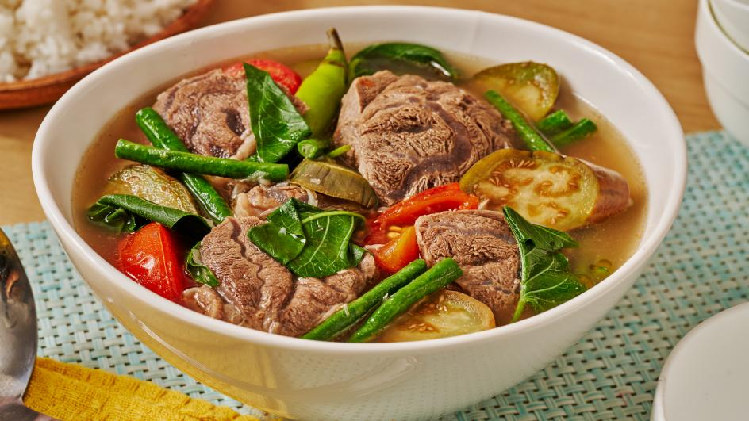

Pork Sinigang Recipe

Easy steps on how to cook Pork Sinigang
With its very affordable ingredients... your family will surely love this very savory, tangy, delicious food!
Ingredients:
- 1⁄2kg pork lion (chopped to small pieces)
- 41⁄2 cup water
- Tamarind/sinigang soup mix (22g)
- 1-2 small tomatoes (chopped)
- 1 green chili
- 1 red onion (chopped)
- 2-3pcs garlic gloves (minced)
- 1 bunch of water spinach leaves
- half of white raddish (sliced)
- fish sauce
- salt and pepper
Optional ingredients:
- A quarter cup of string beans (sliced to small pieces)
- Eggplant (sliced)
- Okra